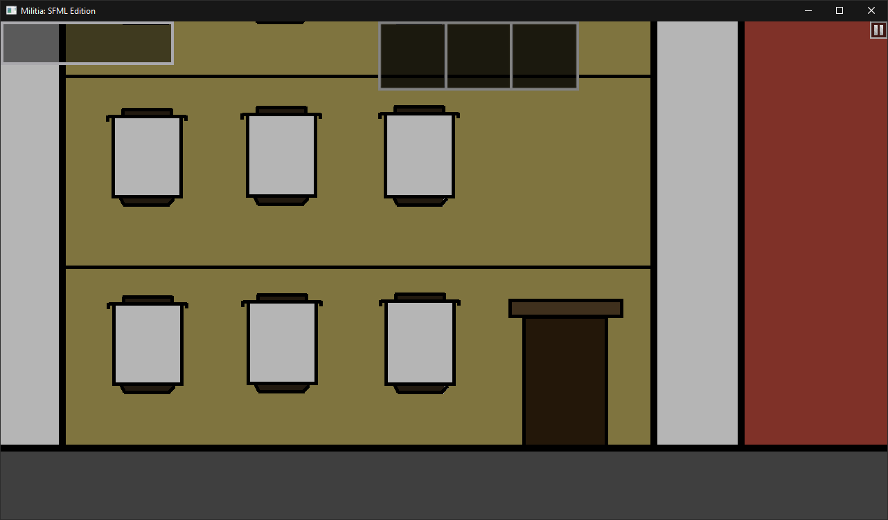
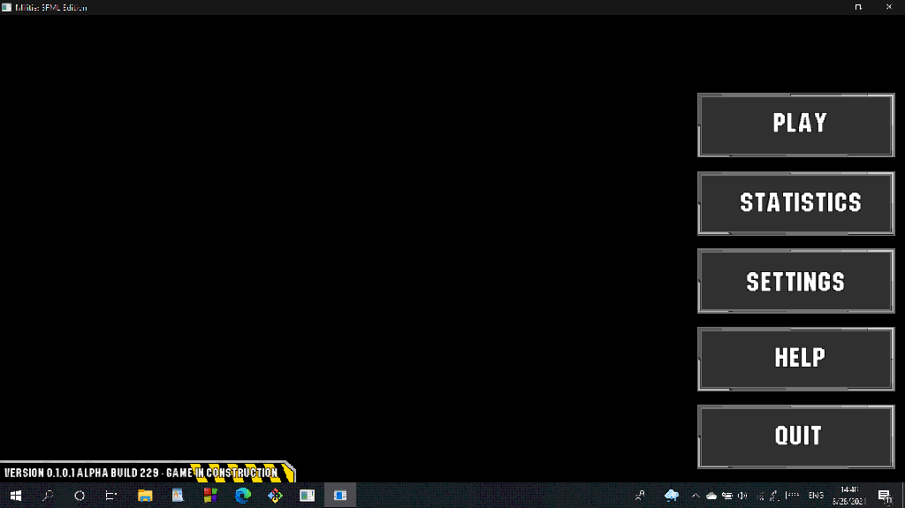

Home
Internal version: v0.1.0-alpha.1+768 Build Number: Created: Saturday, August 21, 2021 10:12:55 AM Compiled: Released: Type: Alpha Development Stage: 1 Build Logs available here Updated as of June 4, 2022 10:17:35
Additions
General
- Added basic font class (PR#1)
Game HUD
- Added 3 Boards
- Has transparent texture.
- Added Pause Button
- Has transparent texture.
- Added Scorebar
- Has transparent texture. (PR#2)
An image of Game HUD with off-centered boards as of v0.1.0.1 alpha build 606 on November 19, 2021
The image consists of temporary background. Actual brackground (and other game textures) remains work-in-progress.
Game Settings
- Added partially functional game selector
- Added non-functional dialog box for game selector
Main Menu
- Added temporary splash screen
- Added temporary main menu (Statistics, Settings & Help is currently unusable)
- Added version text on main menu
An image of Main Menu as of v0.1.0.1 alpha build 229 on August 28, 2021
Harpøzagot (Map 1)
- Added unfinished backgrounds
- Uses unfinished backgrounds.
Player
- Has temporary texture.
- Breathes every 1 second.
- Does not move.
- Does not parachute.
Technical Additions
Engine
- Uses DzergeroEngine.
Entire Game
- Written in C++.
- Uses SFML Library.
Error Codes
- Added the following error codes:
- 000_UNKNOWN_ERROR (unused)
- 001_SYNTAX_ERROR
- 002_INVALID_DIFFICULTY
- 003_CONDITIONAL_OPERATOR
- 004_LOADING_ERROR
- 404_NOT_FOUND
Fixes
Graphical User Interface
- Fixed a bug causing left and arrow buttons to have different texture. (Issue #34)
- Fixed a bug that prevents difficulty slider in map options to work correctly. (Issue #6)
- Fixed incorrect texture of back button from map options screen. (Issue #38)
- Splash Screen will now stretch to the whole window. (Issue #5)